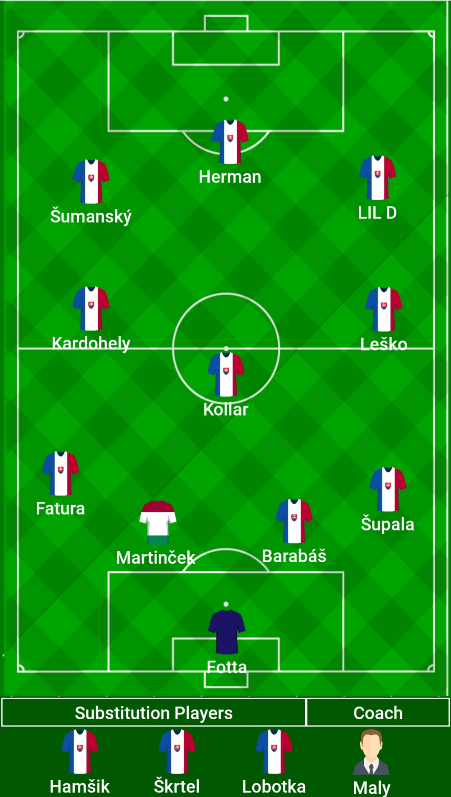

Zostava
„Preco su na ovidvoch stranach ihriska“
{kind=link}
Makaš Lulý - je oficialným trenérom mužstva FC Bäni. S týmto mužstvo trenuje 2 krát do týždna (na hodine telesnej výchovy ). Makaš Lulý vie priniesť tomuto tímu množstvo skusenosti z celého sveta lebo v minulosti sa venoval cestovaniu.
Martinčoko - je oficialným majiteľ klubu FC Bäni a majiteľ psa Beni taktiež aj vnuk prezidenta klubu. Tento hráč je maďarského pôvodu a do klubu prišiel dobrovolne. Nevie hrať futbal.
Kotuš Mallár - je čert a chodí čertovať každu sekundu.
„ A sak to iba blbosti v skole robi co nemaju vyznam a otravuje ludi“ - Martinčoko
FC Hovězí, FC Ria, Skaut - sú jeho prezývkami. Každý deň vstáva o 5 ráno aby išiel do Prešova zbierať huby. Má ADHD.
Kladivo - tento hrač chodí na poštovú školu a nemá rád Repovskú. Prepačte prišla poštarka.
Žid arašid - býva v meste ciganov (Rudňany) kde získava veľa cenných skúsenosti a práve preto si môže dovoliť hrať v klube ako je FC Bäni. Janko Šunka
Deško - rád hrá fortnetti a princa s minionmi. Jeho jedinou zaľubou je chytanie rýb v minecrafte.
Lil D prišiel do FC Bäni z FC Krásna (fuj) a taktiež sa živí rapom. Ruky na volante.
Jaro je frajer. Najlepší futbalista z klubu FC Bäni. Gulaš, Karbonátok.
{kind=link}
{kind=link}
{kind=link}